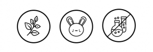

QUIÉNES SOMOS
Con más de 20 colores en la carta, elaboramos los productos de manera artesanal, a base de minerales y extracto de coco, con una alta concentración de pigmentos, lo que hace a la tintura semipermanente y de larga duración.
No usamos sulfatos, petrolatos, siliconas, amoníacos u oxidantes que puedan dañar el cabello. además, son productos libres de testeo en animales y 100% veganos.
Queremos que nuestros clientes tengan calidad, excelencia y estén conformes en cada proceso. por eso damos asesoramiento gratuito en nuestras redes sociales con el fin de informar de manera personal a cada cliente. investigamos y crecemos cada día gracias a ustedes.